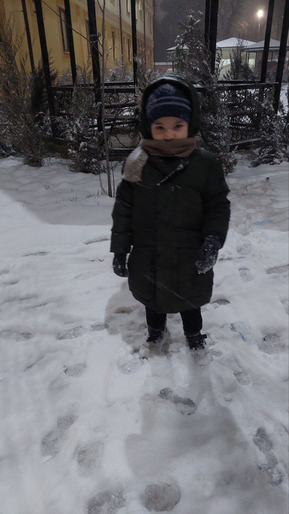
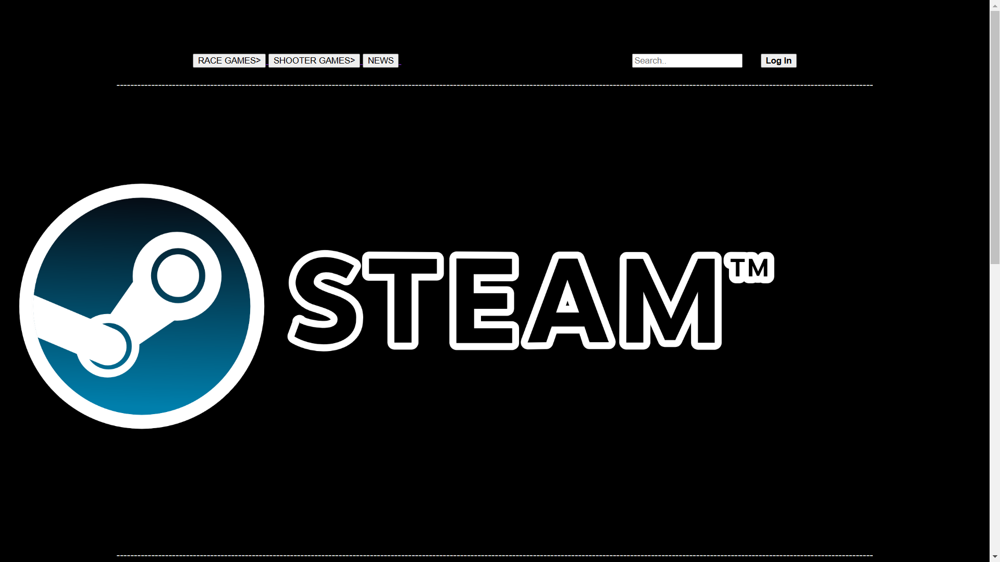
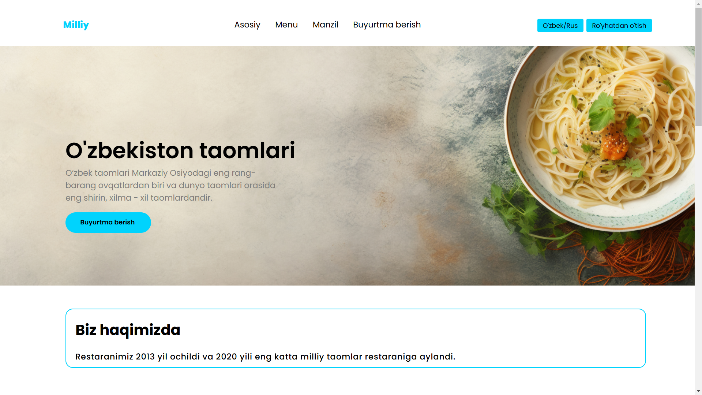

Assalomu alaykum. Mening ismim DONIYOR
Men PDP Junior Sergeli filialida S-F1 guruhida Frontend yo'nalishida o'qiyman. Hozirda men PDP Junior da va ingiliz tilida o'qiyman.
Men haqimda

Bu mening Ukam
Ukam 5 yosh va yaqinda 6yosh bo'ladi va u juda sho'x va sal quloqsizroq.
Mening oilamLoyihalarim
-

"Steam" loyiham
Bu loyihani man 1 - modul uchun qilganman
Ko'rish uchun bosing -

"Milliy" loyiham
Bu loyihani man 3 - modul uchun qilganman
Ko'rish uchun bosing